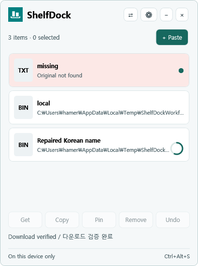

작업 사이에 파일과 캡처, 문구를
잠깐 놓아두는 데스크톱 선반
여러 창을 오가며 필요한 자료를 모으고, 준비되면 원하는 앱으로 한 번에 꺼내 쓰세요. 계정 없음, 클라우드 저장 없음, 100% 로컬 우선으로 동작합니다.

파일 탐색기 파일, 텍스트, 화면 캡처 이미지를 드롭하고 클릭 한 번으로 선반을 엽니다. 닫으면 다시 가벼운 플로팅 아이콘으로 축소됩니다.
가져오기(Get), 복사(Copy), 고정(Pin), 실행 취소(Undo) 지원. 선반에서 아이템을 지우더라도 원본 파일은 결코 삭제되지 않습니다.
계정이나 클라우드 없이, 동일 네트워크 내 다른 PC와 8자리 일회용 OTP와 양방향 60초 승인으로 안전하게 선반을 동기화합니다.
방해받지 않는 자연스러운 데스크톱 작업 흐름
클립보드 매니저처럼 복잡하지 않고, 일반 폴더처럼 어지럽혀지지 않는 가벼운 임시 작업 선반입니다.
어디서나 드롭 & 보관
탐색기의 여러 파일, 스크린샷 캡처 이미지, 웹 브라우저의 텍스트 조각을 화면 위 플로팅 아이콘이나 Ctrl+Alt+S 로 즉시 선반에 놓아두세요.
대상 앱으로 안전 복사
메일 작성 창, 메신저, 포토샵, 터미널 등으로 원하는 항목을 다중 선택해 끌어다 놓으세요. 원본 파일은 절대 삭제되지 않고 오직 복사만 일어납니다.
8자리 OTP 로컬 기기 공유
로그인이나 계정 생성 없이, 동일 Wi-Fi나 LAN 내의 다른 PC와 8자리 일회용 OTP와 양방향 60초 승인으로 직접 P2P 전송합니다.
100% 로컬 우선, 프라이버시 타협 없는 설계
불필요한 클라우드 업로드나 외부 통신 없이 오직 내 PC 환경 안에서 쾌적하게 구동됩니다.
무계정 · 무광고 · 무추적
로그인이나 회원가입 절차가 없습니다. 구글 애널리틱스, 센트리(Sentry), 텔레메트리나 백그라운드 사용량 추적 코드가 단 한 줄도 포함되어 있지 않습니다.
클라우드 저장 없음
선반에 올려둔 모든 파일과 텍스트 스니펫은 사용자의 로컬 메모리와 로컬 디스크에만 임시 보관됩니다. 외부 서버로 데이터가 절대 업로드되지 않습니다.
원본 보존 복사 전용
선반에서 아이템을 삭제하거나 외부로 내보내더라도 원래 파일은 절대 삭제되지 않는 비파괴적(Non-Destructive) 버퍼 구조입니다.
로컬 암호화 P2P 전송
기기간 선반 공유는 기본적으로 꺼져 있으며, 필요 시 사용자가 직접 켠 후 8자리 OTP로 양방향 승인을 완료해야만 종단간 암호화 세션이 활성화됩니다.
설치 없이 바로 가볍게 실행하세요
.NET 별도 설치나 관리자 권한 없이, 압축 해제 후 즉시 실행할 수 있는 무설치 포터블 패키지를 제공합니다.
Windows 11 x64
ShelfDock v0.2.0 Beta (Portable Zip)
별도의 인스톨러 없이 압축을 풀고 ShelfDock.exe를 실행하면 트레이 아이콘과 선반이 즉시 활성화됩니다.
macOS 버전
Apple Silicon & Intel
동일한 로컬 우선 철학과 8자리 OTP 호환을 지원하는 네이티브 macOS (SwiftUI + AppKit) 선반 유틸리티를 개발 중입니다.
GitHub 저장소의 Watch 또는 Releases를 통해 macOS 지원 버전 배포 소식을 가장 먼저 받아보실 수 있습니다.
GitHub 저장소 바로가기 arrow_forward개인 개발자를 위한 따뜻한 커피 한 잔의 힘
ShelfDock은 완전 무료 프리웨어 소프트웨어입니다. 광고나 유료 구독 없이 지속적으로 버그를 수정하고 완성도를 높여갈 수 있도록, Polar에서 커피 한 잔으로 힘을 보태주세요.